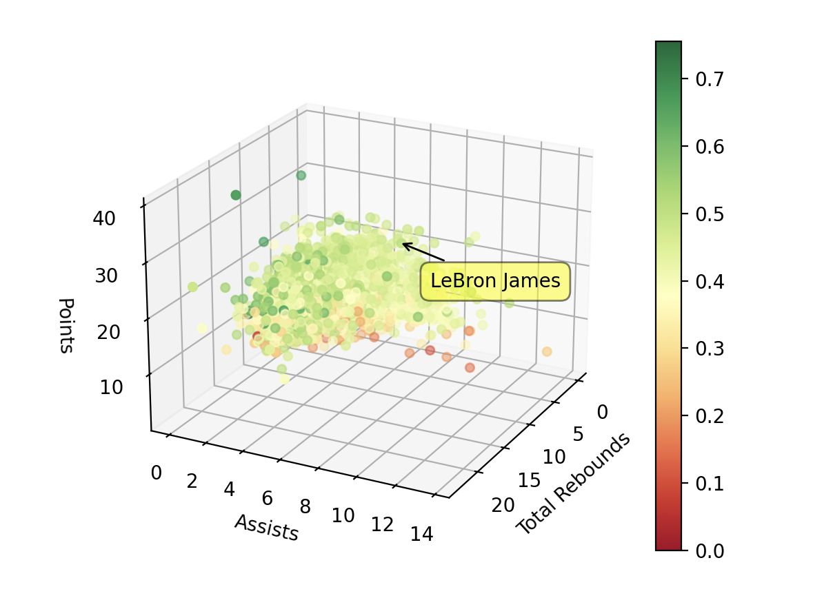

The Problem
The intention I have for this experiment is to group NBA players based on their stats. Grouping players by stats can provide very valuable insights on the game. There is a debate throughout sports on statistics vs the "eye test" which is basically traits that don't show up on a stat sheet. I want to generalize players impacts on the floor using the major basketball stats including points, assists, rebounds, and shooting percentage.
What is clustering?
Clustering is an unsupervised learning method that attempts to group data points with other similarly placed data points. The two most common clustering algorithms are k-means and agglomerative. For this project, I'll be using k-means. K-means clustering groups the dataset into "k" clusters, hence the name. It works by creating "k" points, which are the centers for each cluster. Once this step is complete, all the cluster points get averaged to create a new center point. Then the process repeats until no changes occur from the center point and all the data points stick with a relative cluster.
The Data
I found the data on Kaggle in a dataset called NBA Stats, which has tons of stats from scraping Basketball Reference. The three main datasets from the NBA Stats folder I was interested in were Player per game, Per 36 minutes, and Per 100 Possessions. Player per game would give the average stats for a player per game for a season. Per 36 minutes would give me the average stats for every 36 minutes played, and Per 100 Possessions would give me the average player stats for every 100 times their team had possession of the ball.
The one I chose was Per 36 Minutes. This would give me the best results if I wanted to ignore how many minutes they were given per game. Someone that plays 40 minutes per game is obviously going to have more stats than someone that plays 10 minutes per game. Inside of Per 36 Minutes, I decided to use points, total rebounds, assists, and field goal percentage.
Visualizing the Data
I plotted the data in a 3d scatter, with the 3 axes being points, rebounds, and assists. Since I chose to use field goal percentage as a 4th dimension, I decided to display that through color. From a scale of red to green, with red being a bad field goal percentage and green being a good one. Since there are over 7,000 nba players plotted on this graph, it has heavily clustered. Most of the cluster is near the coordinates 0, 0, 0, because most people that played in the nba were not stars and did not have major roles in the output of the team.
Pre-Proccessing
There were a lot of pre-processing steps I had to follow for this experiment. First, they did not keep track of player minutes before the 1951-1952 season. So every player before that period had null data, which I had to remove. There were nulls in other stats, such as blocks, steals, etc. since more stats were kept track of in the 70s. All of the stats I am using for this project were kept after 1951 though.